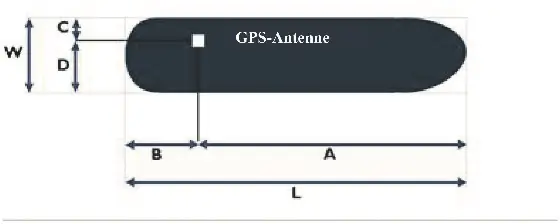
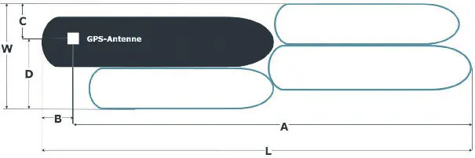
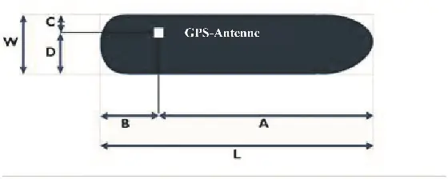
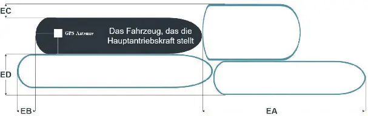

Anlage 9 Daten, die in das Inland AIS Gerät einzugeben sind:Erläuterungen des „Navigationsstatus“ und des „Bezugspunktes der Positionsinformation auf dem Fahrzeug“
Binnenschifffahrtsstraßen-Ordnung
1. Navigationsstatus
0 | under way using engine | in Fahrt mit Motorkraft |
1 | at anchor | vor Anker |
2 | not under command | manövrierunfähig |
3 | restricted manoeuvrability | manövrierbehindert |
4 | constrained by her draught | durch Tiefgang beschränkt |
5 | moored | festgemacht |
6 | aground | auf Grund |
7 | engaged in fishing | beim Fischfang |
8 | under way sailing | in Fahrt unter Segel |
9 bis 13 | reserved for future uses | reserviert für künftige Nutzung |
14 | AIS-SART (active) | AIS-SART (aktiv) |
15 | not defined | nicht definiert |
2. Bezugspunkt der Positionsinformation auf dem Fahrzeug
2.1 Bei Inland AIS Geräten, die vor dem 1. Dezember 2015 eingebaut wurden:
a) Für ein Fahrzeug
Der Schiffsführer muss die Werte für A, B, C und D mit einer Genauigkeit von 1 m eingeben.
Das Maß A ist in Richtung des Bugs ausgerichtet.

Erläuterungen zu den W, L, A, B, C und D Werten für ein Fahrzeug
b) Für einen Verband
Der Schiffsführer muss die Werte für A, B, C und D mit einer Genauigkeit von 1 m und die Werte für W und L mit einer Genauigkeit von 0,1 m eingeben.
Das Maß A ist in Richtung des Bugs ausgerichtet.

Erläuterungen zu den W, L, A, B, C und D Werten für einen Verband
2.2 Bei Inland AIS Geräten, die nach dem 1. Dezember 2015 eingebaut wurden:
a) Für ein Fahrzeug
Der Schiffsführer muss die Werte für A, B, C und D mit einer Genauigkeit von 0,1 m eingeben.
Das Maß A ist in Richtung des Bugs ausgerichtet.

Erläuterungen zu den W, L, A, B, C und D Werten für ein Fahrzeug
b) Für einen Verband
Der Schiffsführer muss die Werte für EA, EB, EC und ED mit einer Genauigkeit von 0,1 m eingeben.
Das Maß EA ist in Richtung des Bugs ausgerichtet.

Erläuterungen zu den EA, EB, EC und ED Werten für einen Verband